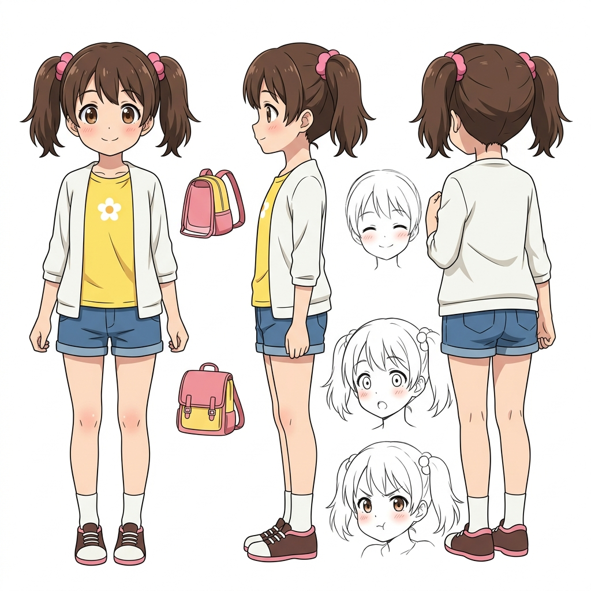
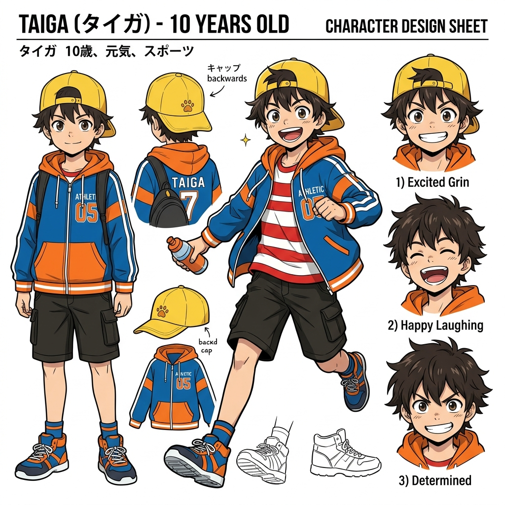
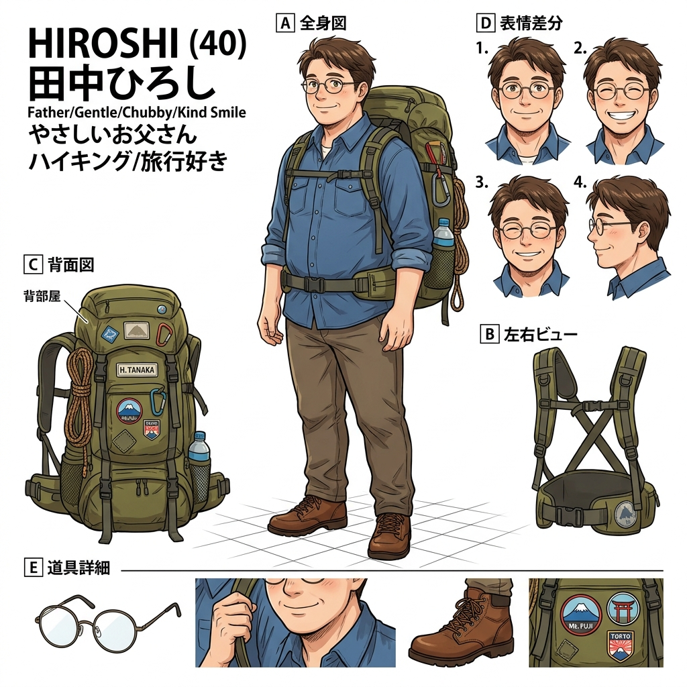
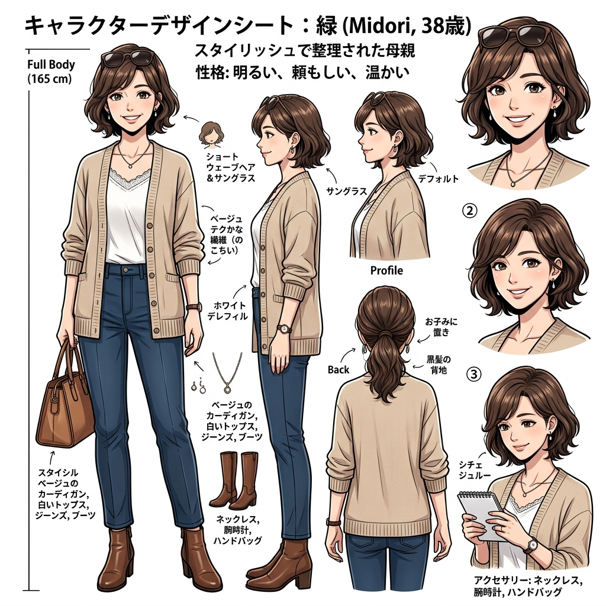

日本漫畫風格
小妤的大阪冒險之旅
一家四口的五天四夜大阪行 • 四格漫畫電子書

主角：小妤 (Xiaoyu)
登場角色介紹
小妤 主角
11歲 / 國小五年級
11歲，活潑可愛的國小五年級女生。愛拍照、愛分享生活，是這次旅行的記錄者。綁著長馬尾，戴著粉紅色髮夾。

小融
10歲 / 國小四年級
10歲，精力過剩的國小四年級男孩。超級吃貨，對美食毫無抵抗力，特別喜歡章魚燒。戴著黃色鴨舌帽。

宏志 (爸爸)
40歲 / 呆萌爸爸
溫和呆萌的爸爸。方向感極差，總是拿著地圖看反。戴著圓形眼鏡，背著大背包。

美綠 (媽媽)
38歲 / 精明決策者
理性且有條理的媽媽。擅長規劃行程與預算，是家裡的決策核心。留著波浪短髮，常戴太陽眼鏡。